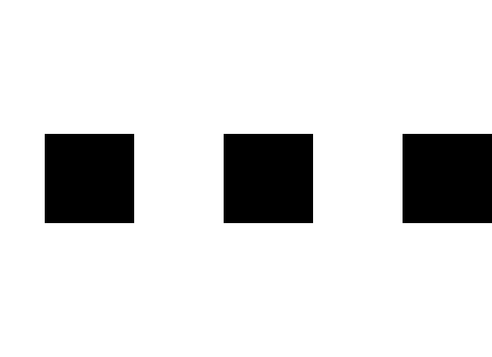

A walk down memory lane
Who doesn't like sharing selfies on social media? Instead of the
same old boring selfie, a website called Webcam Toy lets you add awesome filters, captions, and more
to spice up your photos. When you are done, the website lets you share your photos on popular platforms
such as Facebook and Twitter with a single click. As the name of the website suggests, it lets you click
pictures of yourself with your webcam and further edit it. You can also upload photos to the website from
your computer or phone. Uploading is fast and doesn't require a lot of processing time. There are about
80 different effects and filters on Webcam Toy that you can choose from. These include the standard animal
faces and avatars, and there are also old-school photo effects; all of which were way ahead of their time
when this website was in popular demand. You can posterize, blur, or adjust the tone of your photo. This
website
doesn't come close to the effects you can accomplish in Photoshop, of course, but for a free photo editor
and
for people with no experience with programs that help create fun effects on pictures, it works great. The
website
was designed for social media integration but given the time period it was created in, it is very simple and
has
minimal design aspects - In my opinion it is basic in a way that makes it super easy, straight-forward and
user friendly.
When I was younger, I was practically obsessed with Webcam Toy. Despite the poor image
quality and not-so
attractive website; it hits me straight in the heart with nostalgia. Where I grew up, everyone around me who
was my age was an active user of it, and when I was introduced to it, I was hooked. So now you must be
wondering
why a website like this would hold so many memories for me, how about I just give you a glimpse of how I
this as
a tool for expression when I was younger; but everything taken in this present time period. Let me just take
you
for a walk down memory lane, my memory lane.